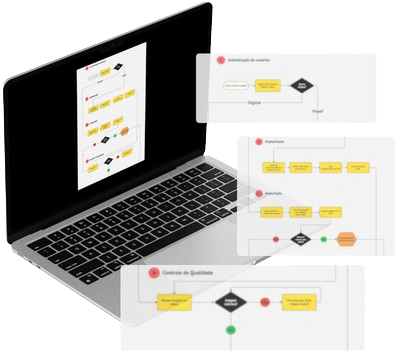
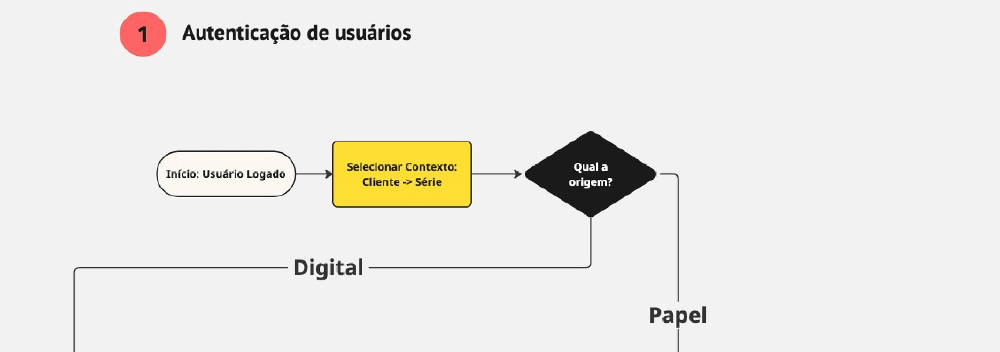
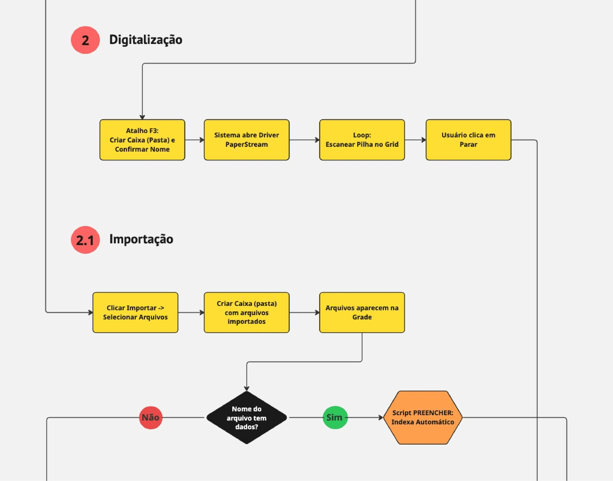
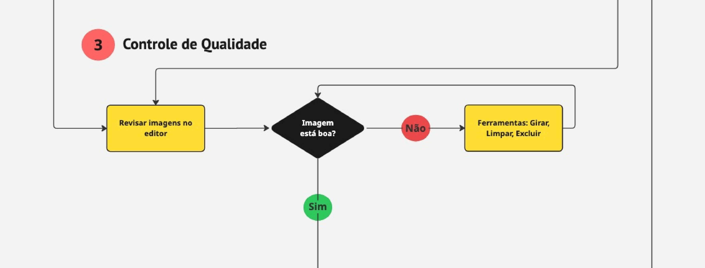
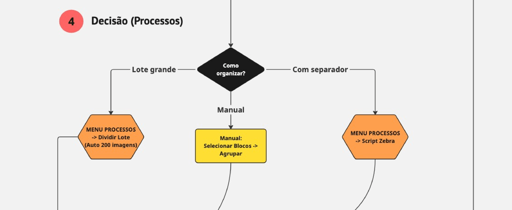
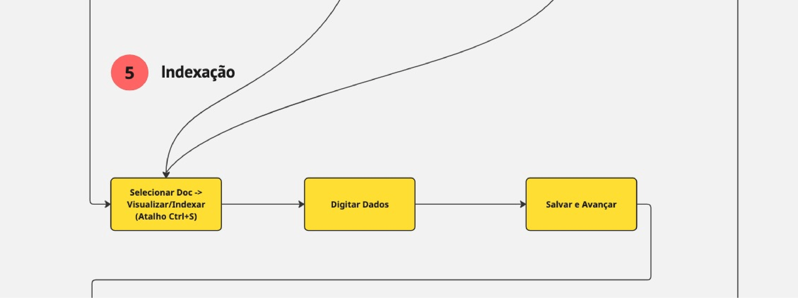
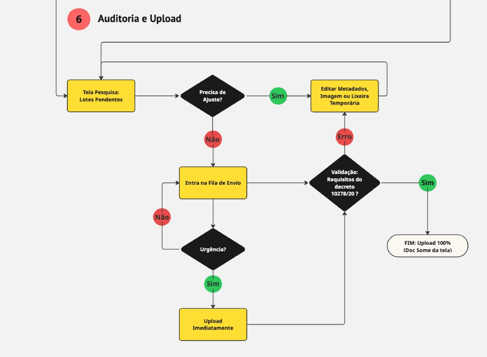

Sistema de
Digitalização
Mapeamento de processos, e levantamento de requisitos operacionais para estruturar as novas funcionalidades e melhorar a produtividade da equipe.
// Visão Geral
O Contexto
Na reta final da minha atuação na MRH Gestão de Arquivos, a operação passou por uma transição de software, adotando um novo Sistema de Digitalização. A equipe operacional, da qual eu fazia parte, passou a utilizar essa ferramenta diariamente para lidar com grandes volumes de arquivos físicos e digitais, exigindo uma rápida adaptação a um fluxo de trabalho intenso.
O Problema
O software recém-adquirido possuía uma interface muito básica e engessada. A falta de atalhos e a ausência de automações geravam retrabalho e excesso de cliques, afetando diretamente a produtividade e tornando a indexação suscetível a erros.
O Meu Papel
Embora minha função fosse administrativa, minha visão de Frontend me fez identificar a oportunidade de melhoria. Assumi voluntariamente o levantamento de requisitos, desenho de fluxos e a criação de wireframes para sugerir melhorias reais.
// O Processo e a Solução






Autenticação e Origem
Controle de acesso rigoroso logo no início da jornada, definindo o contexto de entrada do documento: físico (papel) ou já existente no ambiente digital.
Digitalização e Importação
Uso de atalhos de teclado (F3) para otimizar a criação de pastas. Conversão via scanner ou importação em massa para a grade de processamento.
Controle de Qualidade
Fase de revisão visual no editor. Ferramentas integradas para girar, limpar ruídos ou excluir páginas ilegíveis antes que avancem no fluxo.
Decisão e Organização
O cérebro da operação. Definição da lógica de separação de grandes lotes através de automação (Script Zebra), separadores visuais ou agrupamento manual.
Fase de Indexação
Visualização do documento e digitação simultânea dos metadados essenciais para a busca futura do cliente.
Auditoria e Upload
Revisão de lotes pendentes, validação estrita dos requisitos técnicos e legais (Decreto 10278/20) e o upload final com 100% de conformidade.
// Prototipação e Funcionalidades
Nota de Contexto: Como meu foco é o Desenvolvimento Frontend, estes wireframes de baixa fidelidade foram criados com foco em comunicação interna. Eles serviram para que a gestão visualizasse regras de negócio, fluxos de navegação e botões utilitários, sem foco em estética.
Deslize para os lados para navegar pelas telas:
// Resultados e Aprendizados
O Impacto Real
Os wireframes serviram como ponte direta entre a operação e a gestão. Consegui traduzir dores diárias em requisitos técnicos claros e aplicáveis para melhorar o sistema.
Visão Sistêmica
Compreender as regras de negócio enriqueceu a minha lógica de programação. Hoje, desenvolvo no Frontend com o objetivo de unir usabilidade e eficiência para resolver problemas reais da operação.